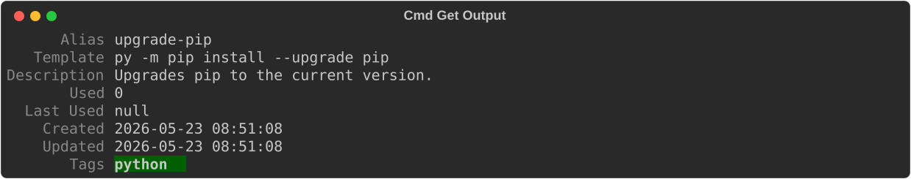
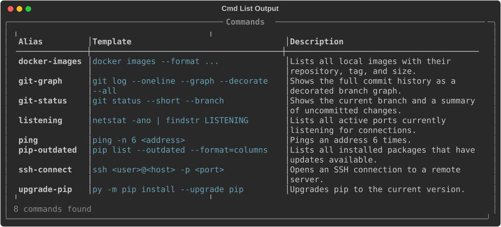
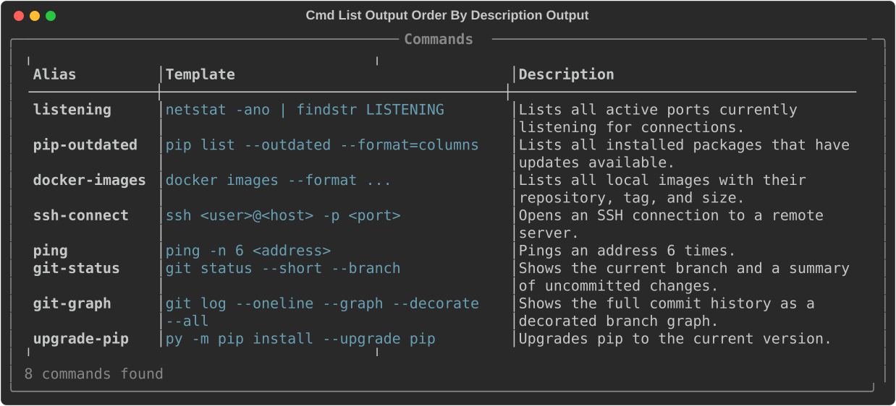
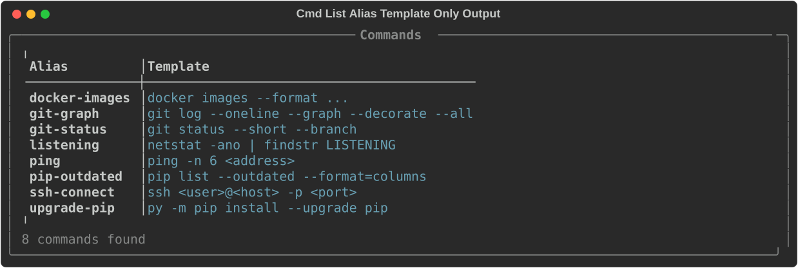
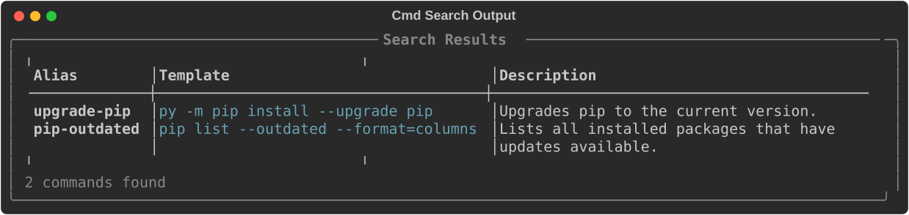
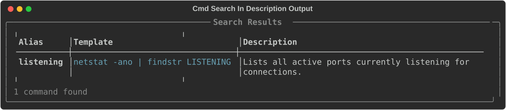
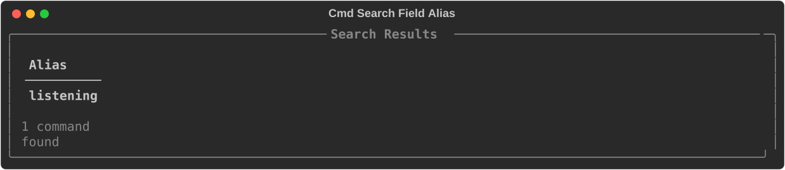

cmd¶
The cmd subcommand is the core of CmdBox. Use it to add, remove, edit, list, and inspect your saved commands.
The available subcommands for the cmd module are:
Some of these subcommands also have aliases available. These will be discussed in the subcommands section.
Skipping the cmd prefix
The cmd prefix is optional. cb add prune-docker ... works the same as cb cmd add prune-docker ..., and this
applies to every subcommand on this page, including their aliases (cb ls works the same as cb cmd list).
If you have a stored command whose alias happens to match one of these subcommand names, the shorthand will
route to the cmd subcommand rather than running your stored command. Use cb run <alias> in that case.
add¶
The add subcommand adds new commands to your CmdBox database.
When creating a command, you only have to provide an alias. You will be prompted for the rest of the fields.
$ cb cmd add prune-docker
? Enter template: docker system prune -f
? Enter description: Removes all stopped containers.
? Enter tags (comma-separated): dev,docker
This same command can be entered in one line.
Notice in this example that alias and template are provided without a flag. They are not optional fields. Description
is an optional field, so it must be prefaced with a --description flag.
You will always be prompted for tags.
Autocomplete
Autocomplete is available for stored tags. In the tag prompt, start typing and the available tags will be suggested.
If you want to be prompted for every input, you can use the --interactive (or -i) flag.
$ cb cmd add --interactive
? Enter alias: prune-docker
? Enter template: docker system prune -f
? Enter description: Removes all stopped containers.
? Enter tags (comma-separated): dev,docker
Tip
Template prompts are multi-line by default. To submit a single-line template, press Escape and then Enter after typing your template text.
Execution context¶
You can optionally store execution context on a command. These values are used as defaults each time the command runs
and can be overridden at runtime using the same flags on cb run.
| Option | Description |
|---|---|
--cwd |
Working directory to run the command from |
--shell |
Shell to use when running the command |
--env KEY=VALUE |
Environment variable to set (repeatable) |
--timeout |
Maximum number of seconds before the process is killed |
$ cb cmd add deploy "npm run deploy" --cwd "/home/user/projects/myapp" --env NODE_ENV=production --timeout 60
The --env flag can be supplied multiple times to set more than one variable.
Windows shells and environment variables
On Windows, templates using %VAR% syntax require --shell cmd.exe to be stored on the command. Without it,
the variable reference will be treated as a literal string rather than expanded.
get¶
The get command retrieves a command and displays all of its available fields along with its tags.
Note
All outputs are stylized. Some of the more stylized outputs will be displayed here in a different format, as shown below:

When execution context has been stored on a command, it will appear in the output alongside the other fields. Otherwise, it will not be shown.
update¶
Aliases
update can also be called as edit.
The update command is used to make changes to a command you already have stored.
You can change only a specific field by specifying that field along with the new value you want it to have.
$ cb cmd update prune-docker --description "Removes all stopped containers, dangling images, and unused networks."
Warning
Be sure to wrap your values in quotes if they contain spaces.
This updates only the description of the stored prune-docker command.
Multiple fields can be updated at once by using the --set flag and using key value pairs like key=value. Each pair
should be separated by a comma with no spaces.
$ cb cmd update prune-docker --set template="docker system prune",description="Removes all stopped containers, asking for confirmation"
Autocomplete
Autocomplete is available for available fields when using --set.
Updating execution context¶
The execution context fields can be updated using the same flags as add.
The --env flag replaces the stored environment variables with the new values you supply. To set multiple variables,
supply the flag multiple times.
To remove a stored execution context value entirely, use the corresponding --clear-* flag instead of supplying a
new value.
| Flag | Clears |
|---|---|
--clear-cwd |
Working directory |
--clear-shell |
Shell |
--clear-env |
Environment variables |
--clear-timeout |
Timeout |
Warning
A --clear-* flag cannot be combined with its corresponding value flag in the same command. For example,
--cwd "/some/path" --clear-cwd will raise an error.
Edit mode¶
If you want to update the current value of alias, template, or description without supplying a completely new
value, you can use the --edit (or -e) flag. When using --edit, you will be prompted to update each of these
fields, and the prompt will be pre-filled with the current value.
$ cb cmd update prune-docker --edit
? Enter alias: prune-docker
? Enter template: docker system prune
? Enter description: Removes all stopped containers, dangling images, and unused networks.
If you know you only want to update a specific field and you do not want to iterate through each field, you can specify
which fields to update by using the --edit-fields flag.
$ cb cmd update prune-docker --edit --edit-fields description
? Enter description: Removes all stopped containers, dangling images, and unused networks.
Note
Execution context fields (cwd, shell, env, timeout) cannot be updated in edit mode. Use the flags described
in Updating execution context instead.
Warning
--edit-fields can only be used in conjunction with the --edit flag.
list¶
Aliases
list can also be called as ls.
The list command displays all commands you have stored in your database.

By default, only the alias, template, and description of each command are displayed, and the default order is by alias.
The default fields and ordering can be adjusted in your settings, or by supplying additional options to the list
command.
To change the order, use the --order flag and specify the field you want to order by.

Tip
Default order for commands is alias, but this can be adjusted in the settings.
To change the displayed fields, use the --field flag and specify the fields you want to display.

List can also be limited to only commands that feature a specific tag.
The --tag flag can be used multiple times to list commands that feature multiple tags.
Tip
When using multiple --tag flags, commands that feature any of those tags will be displayed.
If you have a large database of commands, you may only want to list some of them. For this, you can use the --limit
flag.
Tip
Default limit is 25, but this can be adjusted in the settings.
Paging output¶
If the results do not fit on one screen, CmdBox opens an interactive pager rather than printing everything to a long scrollback. By default this happens automatically once a result set exceeds a configurable number of rows.
Inside the pager:
| Key | Action |
|---|---|
j / ↓ |
Scroll down one line |
k / ↑ |
Scroll up one line |
Ctrl+D / Page Down |
Scroll down one page |
Ctrl+U / Page Up |
Scroll up one page |
g |
Jump to the top |
G |
Jump to the bottom |
q / Esc |
Quit the pager |
These keybindings are also shown at the bottom of the pager itself.
You can override the configured behavior for a single command using --page or --no-page.
Note
The pager only activates when output is going to your terminal. Redirecting or piping output
(cb cmd list > commands.txt) never triggers the pager.
Paging behavior, including whether it is on by default and how many rows it takes to trigger it, can be configured in settings.
search¶
Aliases
search can also be called as find.
While list lets you filter your commands by tag, search lets you filter your commands by any of the available fields.
By default, search is limited to the alias, template, and description fields.

Using the --in flag, you can limit your search to only the fields you want to search in.

And if you only want to see certain fields in the results output, you can use the --field flag.

As with the list command, you can also limit the number of results returned by using the --limit flag.
Search results are paged the same way list results are. See Paging output above, the --page
and --no-page flags are available on search as well.
delete¶
Aliases
delete can also be called as rm, del, or remove.
The delete command is used to remove a command from your database. It only takes the alias of the command you want
to remove.
tag¶
The tag command is used to add tags to a command.
To add a tag, supply the command with the alias of the command you want to tag, followed by the name of the tag.
Autocomplete
Autocomplete is available for tags.
untag¶
Untag works the same as tag.